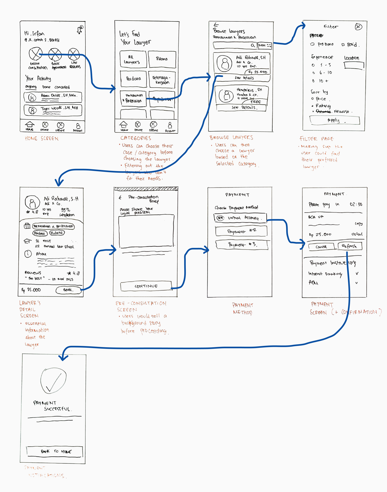

Helping Indonesians find legal help in 38 Seconds

Project Summary: I designed a legal consultation app to help people find a lawyer based on their preferences quickly and easily for an online consultation. I did this by interviewing a few close friends with ongoing legal problems and developing a prototype for them to test.
The result is an average single usability metric (SUM) score of 90,5%, which included an average of 83,3% satisfaction rate.
Activities
- Usability Testing
- User Interviews
- User Flow
- Wireframing & Prototyping
Results
- 90.5% SUM score
- 83.3% satisfaction rate
The Problem
The national legal aid program still has significant gaps in its service provision, particularly in rural areas (Gustaf, 2021). These include limited access to legal aid services, a lack of awareness about the legal aid system, and a shortage of qualified legal aid providers.
This fact resonates with what I have noticed in my surroundings. Many of my friends are struggling to find a lawyer that meets their needs and can provide quality service.
Challenge: Creating an Efficient and Satisfactory Legal App in One Week
I encountered three main challenges:
- Fuzzy problem space: I have no legal background or training, and therefore find it daunting to understand legal terms and common practices.
- Limited time and options for competitive benchmarking: There are not many legal apps that stand out in Indonesia as the top of mind, so I focused on user research instead of competitive research.
- Quick and dirty research method: Since I only have one week to complete this project, I relied on quick research methods to gather insights, including review analysis, user interviews, and unmoderated usability testing.
Initial Research: People with Legal Problems
During my initial research for the legal consultation app, I spoke with five individuals who are currently facing an ongoing legal issue in Indonesia. They shared their personal experiences and the main factors that prevent them from finding a lawyer who can meet their legal needs and objectives.
High Costs of Legal Services
Many individuals in Indonesia find it challenging to afford legal services, especially when it comes to complex legal cases. The high costs involved in legal proceedings can be a significant barrier to getting access to justice for many people.
Limited Knowledge of the National Legal Aid System
Many Indonesians are not aware of the existence of legal aid services or how to access them. This lack of awareness can hinder individuals from getting the legal assistance they need, particularly those from rural areas who have limited access to legal aid services.
Tedious Procedures
The legal system can be complex and confusing, especially for those who are not familiar with it. The lack of information about legal procedures can discourage individuals from seeking legal services, which can further exacerbate their legal issues.
High-Stress Levels
Dealing with legal issues can be overwhelming and stressful, particularly when individuals have limited knowledge and support. The stress and anxiety can be further compounded when individuals have to navigate the legal proceedings on their own.
Overall, the insights gathered from the initial research demonstrate that there is a significant need for an efficient and accessible legal consultation app that can help Indonesians find the legal help they need in minutes, not days.
User Persona
I use personas to help me create empathy and understanding of the people I am designing for:
User Journey (for first-time users in mind)
With the first-time user experience in mind, I focused on four key touchpoints for first-time and novice users to find their preferred lawyer quickly and easily:
- Browse and Filter Lawyers
- Lawyer's detail page (+ Reviews)
- Sharing initial information with lawyers (pre-consultation)
- Checkout / Payment
The main transaction as the main focus
I will focus only on the pre-consultation flow based on the assessment document provided. I won't include the online consultation flow itself (chat, video call, etc.) due to time constraints.
The main goal of this case study is to help users find their preferred lawyer in the shortest amount of time possible.
Initial Wireflows
After setting the touchpoints for my design, I jumped into mapping out each step and how they were related to one another. I used pen and paper for this stage as it allowed for quick and easy ideation of what the app should look like (see next page):
Design Decisions
Once I had finished creating the wireflows, I aimed to design a user interface for the app that was both minimalistic, sleek, and visually appealing, yet still user-friendly.
The following are some of the key touchpoints in my designs and a little explanation of why I designed it the way it is:

Lawyer’s Detail and Reviews Page
By using similar principles from e-commerce product pages, I try to arrange an information hierarchy that fits the users' priorities. I've included a dedicated tab for Reviews to make sure users have what's necessary to convince them to continue with a particular lawyer.
Full Figma Prototype
To access the Figma file, please use the links below:
- Click Here to view the file.
- Click Here to enter the prototype mode.
Validation
The prototype I developed was received positively by users. I also did usability testing to gauge the effectiveness of the design.
I used the single usability metric (SUM) method developed by Sauro & Kindlund (2005) to arrive at a single metric that summarizes the effectiveness, efficiency, and satisfaction level of the design.
The results were quite satisfying:
- 90.5% in overall single usability metric (SUM) score (the spreadsheet will be attached).
- Average time of 38 seconds taken to complete a task of finding a lawyer.
- 83.3% in average satisfaction level.
Lessons Learned
Even though the moderated usability testing gave a great quantitative result, I found a lot of things to be improved from personal UI audit and qualitative solution interviews.
Flow Validation
There needs to be a tree testing to test the flow and information architecture of the whole application. Future studies should have its’ own space to test with users on a structural level before the skeleton level.
Consultation Categories
Up until this point, I assume that law consultation categories don’t have a standardized set of terms (like in health-tech). It would be more helpful if categories are organized neatly (either alphabetically or based on urgency).
Blank States
I am quite aware that the current prototype doesn’t have any blank states or error conditions. This is one of the main tasks that should be involved in future studies to anticipate the worst possibilities (failure to book a lawyer, etc.)
Lawyers’ Workflow and Online Queue
I am also aware that this prototype was made without considering the workflow of lawyers. Online queue should be one of the major concerns due to the limited working time of lawyers in front of screens.